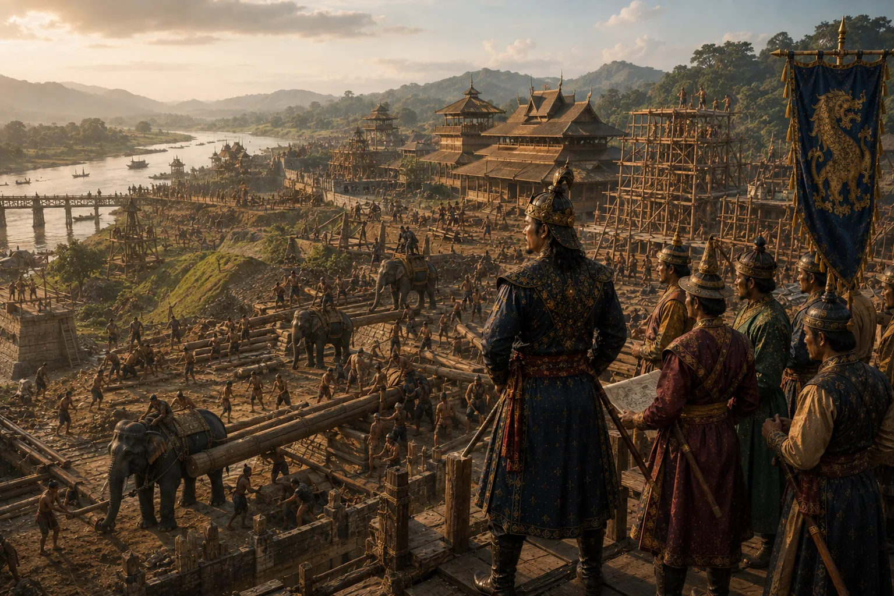

Construction of Fortified Capital Garhgaon and Naga Ali
1540–1546 · Swarganarayan’s kingdom

Excavates the monumental Garhgaon moat and earthen ramparts, builds brick gateways, and constructs the great Naga Ali military road.
Sources have not yet been catalogued for this record.
People: Suklenmung (Garhgayan Roja)
Open this scene in the interactive archive · Follow this event on MAP